MeshLab is an open source, portable, and
extendible system for the processing and editing of unstructured 3D triangular
meshes.
The system is aimed to help the processing of
the typical not-so-small unstructured models arising in 3D scanning, providing a
set of tools for editing, cleaning, healing, inspecting, rendering and
converting this kind of meshes.
The project is supported by the European Network of
Excellence Epoch
and Aim@Shape
The system is heavily based on
the VCG library
developed at the
Visual Computing Lab of ISTI - CNR,
for all the core mesh processing tasks and it is available for
Windows,
Linux and
MacOSX (intel only).
The MeshLab system started in late 2005 as a part of the FGT course of the Computer Science
department of University of Pisa and most of the code (~15k lines) of the first
versions was written by a handful of students. Also this year FGT students has continued to work to this project implementing new features.
The proud MeshLab developers are listed below.
Download Latest Version (5 March 2007) V1.0.0 (changes)
Remember that, whenever you use MeshLab in a official/commercial project or in any kind of research, you should:
- Explicitly cite in your work that you have used MeshLab, a tool developed with the support of the Epoch NOE,
- Post a couple of lines in the users' forum describing the project where MeshLab was used.
Features
- Interactive selection and deletion of portion of the mesh. Even for large models.
- Painting interface for selecting, smoothing and coloring meshes.
- Input/output in many formats:
- import:PLY, STL, OFF, OBJ, 3DS, COLLADA, PTX
- export:PLY, STL, OFF, OBJ, 3DS, COLLADA, VRML, DXF
- Mesh Cleaning Filters:
- removal of duplicated, unreferenced vertices, null faces
- removal of small isolated components
- coherent normal unification and flipping
- erasing of non manifold faces
- automatic filling of holes
- Remeshing filters:
- High quality edge collapse simplfication (even meshes with texture coords preservation)
- Surface reconstruction from points (a ball pivoting variant)
- Subdivision surfaces (loop and butterfly)
- Feature preserving smoothing and fairing filters
- Various Colorization/Inspection filters
- Gaussian and mean curvature
- Border edges
- Non two-manifold edges
- Self intersecting faces
- Interactive Mesh Painting
- Color Painting
- Selection paint
- Smoothing
- OpenGL Shader based rendering (write your own shader!) compatible with Typhoon Lab's Shader Designer
- Large rendering (up to 16k x 16k) for high quality printing
- The history of the all performed cleaning/editing actions can be re-played on different meshes or saved and for archival purposes.
- Extendible plugins based architecture, writing new mesh processing functions, colorization filters and support for different file formats is quite easy! Look at Filter-PlugIn Sample or MeshIO-PlugIn Sample
General questions can be posted on the help public forums
ScreenShots
| Snapshots taken from MeshLab v 1.0.0 | |


|
An example of the new quadric based simplification algorithm that is now able to correctly manage texture coordinateds. New texture coordinates are computed for the vertexes resulting from the edge collpases and texture seams are correctly simplified. Thanks to Marco Pirosu for the development of this plugin. |


|
An example of the new interactive editing features. You can directly paint, with customizable brushes, over the mesh. You can interactively change color (left), define selection (center) and even smooth out noise and small features (right). Thanks to Andreas Gfrei for the development of this plugin. |
| Snapshots taken from MeshLab v 0.9 | |
 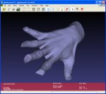
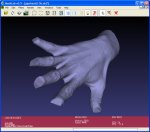
|
An example of the improved hole filling algorithm. Holes with irregularly shaped borders can be successfully closed with (possibly) non self-intersecting patches. |
| Snapshots taken from MeshLab v 0.8 | |
   |
An example of automatic noise removal. A mesh with some random noise (left) is smoothed twice (center and right) using a feature preserving two-step smoothing algorithm. |
  |
An example of automatic hole filling. All the holes with a boundary smaller than a given threshold (30 edges in this case) are autmatically filled. |
 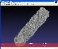 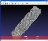  |
An example of the high quality edgecollapse simplification algorithm based on quadric error metrics. A ~1.000.000 triangle mesh (left) is simplified to 100.000 (center) and then up to 10.000 triangles, while maintaining most of its geometric features. |
| Snapshots taken from MeshLab v 0.7 | |
| 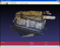 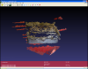 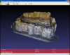 | An interactive editing session over the a mesh built a using geometry-from-photo-sequence reconstruction tool developed withing the EPOCH framework. An unwanted part of the mesh is selected and deleted. Original mesh courtesy of the Epoch network. |
 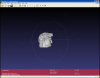 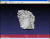 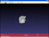 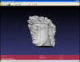 |
An interactive editing session over the 8M tri David model. The bottom part of the mesh is selected and deleted. Original mesh courtesy of Stanford Digital Michelangelo Project. |
| 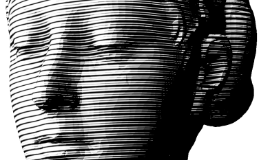 | One example of real time NPR rendering using a hatching style implemented through a OpenGL shader. The shader was used to create the high res snapshot (2282x2942). |
| Snapshots taken from MeshLab v 0.6 | |
| 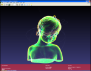 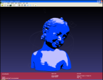 | A couple of examples of a OpenGL shaders applied over a 3.7 Mtri model (courtesy of Aim@Shape Shape repository).. |
| Snapshots taken from MeshLab v 0.5 | |
| 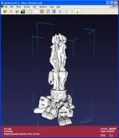 | A 10,000,000 face model successfully loaded and ready for inspecting. 3D Model of a Thai statue courtesy of XYZ RGB inc. provided by the Stanford 3D Scanning Repository. |
 |
A textured ply model of the well known Michelangelo David, original mesh courtesy of Stanford Digital Michelangelo Project, texturing done by Visual Computing Lab ISTI - CNR through integration of photos taken during the Restoration of the David. |
| 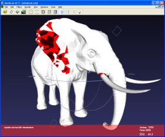 | A model with self intersecting faces detected by MeshLab colored in red. Mesh courtesy of the Aim@Shape Shape Repository. |
| 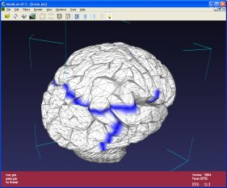 | A model with border edges colored in blue. Mesh courtesy of the Shape Repository of Aim@Shape. |
| 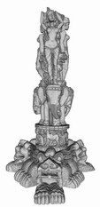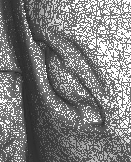 | A high resolution snapshot (4400x9110) taken with MeshLab of the 10 Mtri 3D model of the above cited Thai statuette. The snapshot is a 17Mb png, so you can download it using the sourceforge file distribution system. On the right you can see a very small portion of the orginal sample just to give you an idea of the quality of a 40 Mpix image. |
  |
An high resolution rendering (3200x6424) taken with MeshLab of the 8 Mtri model of the Michelangelo David. Original mesh courtesy of Stanford Digital Michelangelo Project. The model is interactively rendered using a pre-computed ambient occlusion term computed with the open source ShadeVis tool. On the right you can see a very small portion of the original rendering just to give you an idea of the quality of the original 20 Mpix image. |
Developers
- Designer: Paolo Cignoni
- Filtering Plugins:
- Mario Latronico [latronic], Andrea Venturi [giec], Elisa Cerisoli [e_cerisoli], Marco Pirosu [pirosu]
- Interface Framework
- Alessio Mochi [mochi], Daniele Vacca [glVertex], Davide Portelli [portelli]
- Rendering Modes
- Massimiliano Corsini [corsini], Francesco Vannini [vannini], Giorgio Gangemi [ggangemi]
- Brush Painting and Selection:
- Andreas Gfrei[gfrei]
- IO filters:
- Andrea Buzzelli [buzzelli], Guido Ranzuglia [granzuglia], Federico Mazzanti [fmazzant]
- Linux Porting and Epoch plugins integration:
- Maarten Vergauwen [zifnab1974]
History
- 04/04/2007 V 1.0.0 Release
[details]
[hide]
= New features = * Painting plugin: color, selection and smoothing directly interactively onto the mesh (thanks to gfrei) * Simplification of textured Mesh with preservation of texture coords (thanks to pirosu) * Automatic vertex unification when loading stl files * More user-definable parameters in quadric simplification and in hole filling * Improved filtering and support for compressed depthimage in the Epoch import tool * New generic dialog mechanism, easier for developer add/change/document filter parameters * Selection handling improved in many filters * Added wiki based online help * Restored on screen help * Added online bug submission using Sourceforge tracking system * Reformatted info bar (Added number of selected faces and fixed size fonts) = Corrected Bugs = * Snapshots do not crash MeshLab any more. * Improved OpenGL shader compatibilities. * Corrected bug in quadrics simplification about target number of selected faces * Corrected bug of wrong loading ply with per face color (was save a 3ds and reload as a ply) * Corrected bug on trackball hanging (if you released a modifier before mouse)
- 12/12/2006 V 0.9 Release
[details]
[hide]
** New features ** Support of WRL and SMF file format (write only) Support of PTX file format (read only) Automatic checking of new version Non manifold vertex coloring Improved quality and robustness of Hole Filling filter (now large and non manifold holes can be handled) ** Corrected Bugs ** nasty bug that affected the saving and loading various 3d format (3ds, obj and off)
- 10/11/2006 V 0.8 Release
[details]
[hide]
** New features ** New High Quality Quadric Based Simplification filter Support of Collada file format (read and write) Support for 3d models reconstructed by the Epoch 3d Web Service Support for point based models - Computation of implicit surface normals - Surface reconstruction (a ball pivoting variant) First command line version Filter history recording ** Corrected Bugs ** No more sticky trackball Better OBJ and OFF loading/saving Better control of lighting in Shaders and debugged/improved most of shaders. ** Known Bugs ** - Collada support for non triangulated meshes is missing - Surface reconstruction from points lacks of robustness... - Quadric simplification does not optimize texture coords during simplification - Filter recording and re-playing still buggy.
- 22/06/2006 V 0.7 Release
[details] [hide]
Selection and Editing of large meshes is now possible! Recording and replaying of history of filters Filter classes restructured (now filters are assigned to different submenus) Rewrote of Clustering simplification algorithms Shaders debugged Better choice of initial modes Automatic Installer for windows No more intrusive progress bars
- 12/03/2006 V 0.6 Release
[details] [hide]
General issues - Slight code restyling in order to reduce the lines of code - Command line execution now works correctly - Better managing of optional mesh datas - Better color initialization Plugin System - Decoration: Thicked axes with arrows and axes names Quoted Box Normals restyled - Filters Sub-division surface Remove triangles above threshold Apply Transformation Color non-manifold - Colorize: Curvature code restyled
RMS curvature Absolute curvature By Quality Added restore color function - Shaders: Import code restyled and optimized Runtime dynamic dialog created to change shader properties - Import/Export: .3DS Import/Export full supported (via lib3ds) * User Interface - Reimplemented double-sided lighting - Added some new shortcuts - Optimizations in ChangeFOV (Vertigo effect) - Solved OpenGL bugs on FLAT_LINES - Solved bug in trackball visualization - Light direction can be rotated - Better scalable fonts - Quick help on screen (Press F1) - About plugin restyled - 13/01/2006 V 0.5 Release
[details] [hide]
* General issues
- Switched to qt4.1
- Corrected Trackball panning
- Safer initialization of color data
- Better memory management (removed HUGE memory leaks...)
- Meshlab icon and logo
- About plugin Dialog
* Plugin System
- Filters:
Invert Faces
- Colorize:
Logging mesh curvature info
Rewritten code to follow coding conventions
Mean Curvature
Color non Manifold (now sets colorPerVert)
Moved mean and gaussian curvature functions into color_curvature.h
- Normals restyled
- Import/Export:
Managing error messages if saving fails
.3DS Imporer first rough implementation
.3DS Export Standardization, saves vertexes and faces + color per face
.3DS Export introduced materials managing
.OBJ Import solved some bugs during file import
.OBJ Export higly improved speed
* User Interface
- Clipping planes now can be moved via CTRL+SHIFT+mouse wheel
- Vertigo FOV with CTRL+mouse wheel
- Icons restyled (transparent)
- Changed snapshot toolbar icon
- Reapply last filter command
- Reload command
- About dialog restyled
- CTRL+Tab switch to next opened window
- CTRL+F4 close current file
- Fonts ok - 24/12/2005 V 0.4 Release
[details] [hide]
* Plugin System
- Improved PluginSystem
- Improved shaders support (based on Typhoon Labs shaders)
- Filtering: Customizable filters thru dialogs
- Filters:
Laplacian smooth
MidPoint Subdivision
Re-orient
Decimator
- Editing (No editing tools available)
- Colorize:
Self intersection
Border
- Import/Export:
obj File Format (Customizable export thru dialog)
off File Format
stl File Format
3ds File Format
- Decoration:
Show Axis
Show Box Corners
* User Interface
- Bugless progress bar
- About Plugin dialog
- Logging - 07/12/2005 V 0.3 Release
[details] [hide]
* Plugin System - Complete restyling of plugin architecture - Color: None, Per Vertex, Per Face - Color: Support for shaders (wow!). Provided toon shader sample. - Filtering: Remove Null Faces - Filtering: Butterfly & Loop optimized - Decorize: New plugin class - Import/Export: Obj file format integrated on standard user interface * User Interface - Info Panel: Showing some mesh info (numTri&numFaces) Showing fps - Shortcut for some frequently used actions - Trackball hidable - Option dialog: Background colors (Top&Bottom) Log Area color - Progress bar - RenderModes: Textures - Fullscreen - Cycle thru opened windows with Next button
- About dialog - 27/11/2005 V 0.2 Release
- 15/11/2005 V 0.1 Release
- 17/10/2005 Committed first rough framework. The development has just begun...


{kind=link}
{kind=link}
{kind=link}
{kind=link}
{kind=link}
{kind=link}
{kind=link}
{kind=link}
{kind=link}
{kind=link}
{kind=link}
{kind=link}
{kind=link}